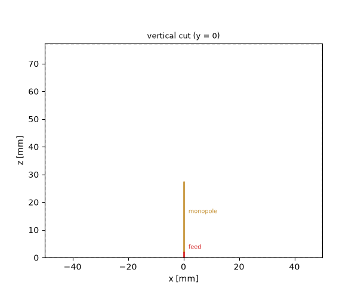
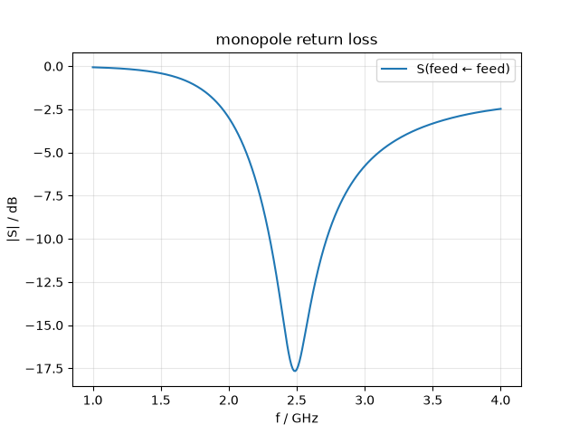
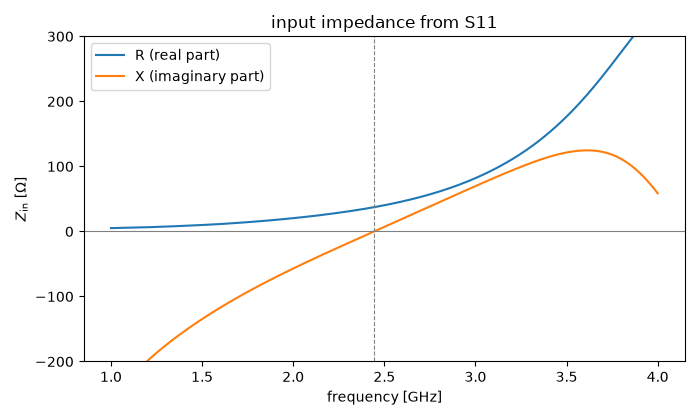
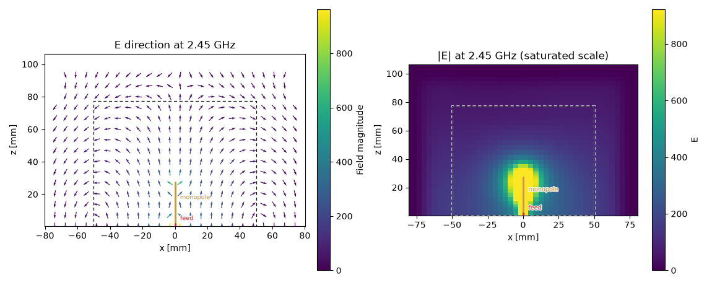
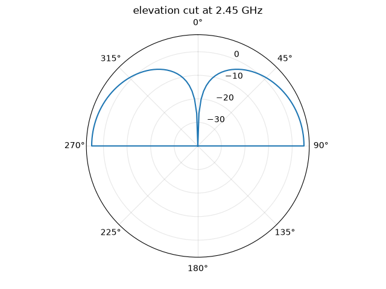

Note
Go to the end to download the full example code.
Open boundaries: a monopole antenna#
Every structure so far lived inside metal: coaxial shields, waveguide walls, a cavity — the domain boundary was always a physical conductor. An antenna breaks that pattern. Its whole purpose is to launch a wave that leaves, so the simulation domain must end in something that absorbs outgoing radiation as if free space continued forever. That something is the CPML — a convolutional perfectly matched layer, declared per face exactly like the PEC and PMC walls of the earlier tutorials.
The antenna is the simplest one there is: a quarter-wave monopole, a thin vertical wire over a conducting ground plane, fed at its base — the geometry behind every whip antenna ever mounted on a car roof. Target: resonance in the 2.45 GHz ISM band.
The geometry: a wire in a box of air#
Two boundary declarations carry the physics. The ground plane is
the zmin face declared PEC: an infinite electric wall. Image
theory turns the monopole above it into a virtual dipole of twice
the height — same resonance, half the feed resistance (the textbook
73 Ω of a thin half-wave dipole becomes ~36.5 Ω). The other five
faces are declared CPML; the mesher appends the absorbing layer
outside the declared domain, so the air brick below is the usable
free-space region, not something the layer eats into.
The wire itself is a ThinWire: a sub-cell
conductor along a curve. Its 0.5 mm radius is far below any
affordable cell size, so it is not meshed as a solid — the mesher
masks the edge chain PEC and corrects the surrounding cells so the
wire presents the correct per-length inductance of a round conductor
of exactly that radius.
One rule of thumb before the numbers: leave clearance between a radiator and the absorbing boundary. The CPML absorbs propagating waves; the reactive near field clinging to the antenna should have decayed first. A quarter wavelength is the minimum, half a wavelength is comfortable — here the 50 mm of clearance is about \(\lambda/2.4\) at resonance.
import matplotlib.pyplot as plt
import numpy as np
import magnelio as mio
from magnelio import geo, monitors, plots, ports
h = 25.3e-3 # wire length (trimmed; ~0.22 lambda incl. the gap at 2.45 GHz)
a_wire = 0.5e-3 # wire radius
gap = 2.0e-3 # feed gap between ground and wire base
pad = 50.0e-3 # clearance antenna -> absorbing boundary
air = mio.Material.air()
model = mio.GeometryModel(
boundary_conditions={
"zmin": "PEC", # infinite ground plane
"xmin": "CPML",
"xmax": "CPML",
"ymin": "CPML",
"ymax": "CPML",
"zmax": "CPML",
}
)
model.add(
geo.Brick(
origin=(-pad, -pad, 0.0),
size=(2 * pad, 2 * pad, gap + h + pad),
material=air,
)
)
model.add(
geo.ThinWire(
geo.Curve.polyline([(0.0, 0.0, gap), (0.0, 0.0, gap + h)]),
radius=a_wire,
name="monopole",
)
)
GeometryModel(2 shapes, background=air)
The feed: a discrete port#
A wire antenna has no waveguide cross-section to define a modal
port on. Instead, a PortLumped bridges the
gap between ground and wire base: a Thévenin source with a 50 Ω
internal impedance squeezed onto one grid edge — the time-domain
equivalent of the SMA connector soldered to the ground plane. A
later tutorial treats discrete ports and lumped elements
systematically; here it is simply the right feed for the job.
model.add_port(ports.PortLumped(name="feed", start=(0.0, 0.0, 0.0), end=(0.0, 0.0, gap), Z0=50.0))
GeometryModel(2 shapes, background=air)
With the feed declared, a vertical cut shows the whole model. Note what is not a solid in this picture: the wire is a curve with a sub-cell radius and the port is a single edge, so neither has a cross-section to slice. They are drawn from their definitions instead — which is the only way an antenna model shows up as anything but an empty box of air.

Mesh, monitor, and the run#
The excitation band spans 1–4 GHz around the target resonance. Two
monitors ride the run: a frequency monitor accumulates the complex
field pattern at 2.45 GHz on the vertical cut through the wire — the
picture that will show the antenna radiating — and a
MonitorFarField records the surfaces a
far-field computation needs. The latter takes no geometry at all:
it places a closed recording box inside the free-space region by
itself, and the ground plane is handled for it (more below).
f_min, f_max = 1.0e9, 4.0e9
f0 = 2.45e9
mesh = mio.Mesh.from_geometry(
model,
mio.MeshControl(min_nodes_per_wavelength=20),
f_max=f_max,
)
print(f"grid: {mesh.Nx} x {mesh.Ny} x {mesh.Nz} cells")
nearfield = monitors.MonitorFieldFrequency(
corners=((None, 0.0, None), (None, 0.0, None)),
freqs=[f0],
fields=["E"],
name="nearfield",
)
farfield = monitors.MonitorFarField(freqs=[f0], name="farfield")
analysis = mio.AnalysisScatteringTD(
mesh=mesh,
f_min=f_min,
f_max=f_max,
monitors=(nearfield, farfield),
verbose=False,
)
f_axis = np.linspace(f_min, f_max, 301)
result = analysis.run(f_axis=f_axis, excited=["feed"])
grid: 46 x 46 x 48 cells
Reading S11 of an antenna#
A one-port device has a single S-parameter, and for an antenna it is the datasheet: wherever \(|S_{11}|\) dips, the feed power goes somewhere other than back — and with no walls and no losses, “somewhere” can only be radiation.
fig, ax = result.plot_s(("feed", "feed"))
ax.set_title("monopole return loss")
s11 = result.S("feed", "feed")
i_dip = int(np.argmin(np.abs(s11)))
in_band = f_axis[np.abs(s11) < 10 ** (-10 / 20)]
print(f"S11 dip: {20 * np.log10(np.abs(s11[i_dip])):.1f} dB at {f_axis[i_dip] / 1e9:.2f} GHz")
print(f"-10 dB band: {in_band[0] / 1e9:.2f} to {in_band[-1] / 1e9:.2f} GHz")

S11 dip: -17.7 dB at 2.49 GHz
-10 dB band: 2.31 to 2.72 GHz
Note what the dip is not: it is not −40 dB. A well-built antenna is not automatically a well-matched one, and this dip bottoms out near −18 dB because the monopole’s feed resistance is ~37 Ω, not the 50 Ω of the source. The input impedance, computed from S11 the way a network analyzer would, makes that quantitative:
zin = 50.0 * (1 + s11) / (1 - s11)
im = zin.imag
i = int(np.nonzero((im[:-1] < 0) & (im[1:] >= 0))[0][0])
f_res = f_axis[i] - im[i] * (f_axis[i + 1] - f_axis[i]) / (im[i + 1] - im[i])
r_res = float(np.interp(f_res, f_axis, zin.real))
print(f"resonance (Im Zin = 0): {f_res / 1e9:.2f} GHz")
print(f"feed resistance there: {r_res:.1f} Ohm (thin-monopole textbook: ~36.5)")
fig, ax = plt.subplots(figsize=(7, 4.2))
ax.plot(f_axis / 1e9, zin.real, label="R (real part)")
ax.plot(f_axis / 1e9, zin.imag, label="X (imaginary part)")
ax.axhline(0.0, color="gray", lw=0.8)
ax.axvline(f_res / 1e9, color="gray", lw=0.8, ls="--")
ax.set_xlabel("frequency [GHz]")
ax.set_ylabel(r"$Z_\mathrm{in}$ [$\Omega$]")
ax.set_ylim(-200, 300)
ax.legend()
ax.set_title("input impedance from S11")
fig.tight_layout()

resonance (Im Zin = 0): 2.44 GHz
feed resistance there: 37.4 Ohm (thin-monopole textbook: ~36.5)
The curve reads like the antenna-theory chapter: capacitive (\(X < 0\)) below resonance, a zero crossing where the wire is electrically a quarter wave, inductive above, with the resistance rising through ~37 Ω right there. The resonant length is a little short of the geometric \(\lambda/4\) — 27.3 mm of wire-plus-gap against \(\lambda/4 = 30.6\) mm — the classic end-effect shortening every antenna handbook quotes as a few percent.
The near field: radiation leaving cleanly#
The frequency monitor turns the run into one complex field pattern at 2.45 GHz. Near-field amplitudes span orders of magnitude between the feed region and the domain edge, so both panels trade amplitude fidelity for readability: the arrows are normalised to show the direction field, and the colour scale saturates near the wire so the radiated field remains visible.
The directions tell the antenna story: vertical along the wire — drawn into the picture along with its feed, so the field can be read against the structure that produced it — arcing down to the ground plane, and organised into detached phase fronts above the tip: the wave has left the antenna. The magnitude panel shows the monopole’s signature: radiation is strongest along the ground plane and weak straight up. Everything decays smoothly and simply ends at the dashed domain edge, where the CPML absorbs it. If that layer were a PEC wall instead, this picture would be criss-crossed by standing-wave fringes — and the S11 curve above would ripple with the resonances of the box instead of showing one clean antenna dip.
# The saturation level is taken from the data rather than written out
# as a number: ``data`` is in V/m per √W of incident power, and a scale
# tied to the pattern's own peak keeps this plot honest no matter what
# the drive level or the structure is.
e_peak = np.sqrt(sum(np.abs(v) ** 2 for v in nearfield.data.values())).max()
fig, axes = plt.subplots(1, 2, figsize=(11.5, 4.6))
nearfield.plot(
component="E",
f=f0,
plot_type="vector",
geometry=model,
ax=axes[0],
normalize_arrows=True,
threshold=0.004,
density=26,
)
nearfield.plot(
component="E", f=f0, plot_type="color", geometry=model, ax=axes[1], vmax=0.15 * e_peak
)
axes[0].set_title("E direction at 2.45 GHz")
axes[1].set_title("|E| at 2.45 GHz (saturated scale)")
fig.tight_layout()

The far field: how much power goes where#
The near-field picture says the wave leaves; the far field says where it goes. The far-field monitor recorded the tangential fields on a closed surface around the antenna during the run — except at the ground plane, where no closed surface fits. There it relies on the same image theory the feed already uses: the PEC floor mirrors the recorded surface, and in return the result knows that only the upper half space is physical.
result performs the near-to-far-field transform and returns the
pattern; the elevation cut below is the monopole’s textbook shape —
maximum along the ground plane, a null straight up, nothing below
the horizon.

The numbers behind the plot come as the standard antenna quantities,
all referenced to the half-space problem the ground plane defines.
realized_gain is the directly measured one — radiated intensity
per watt incident at the feed, mismatch included; gain divides
by the accepted power instead, and directivity by the radiated
power. For this lossless model gain and directivity agree to
within the discretisation, and the peak sits at the monopole’s
textbook ~5.2 dBi (the half-wave dipole’s 2.15 dBi plus 3 dB from
radiating into half the space).
d_peak = pattern.directivity.max()
g_peak = pattern.gain.max()
print(f"peak directivity: {10 * np.log10(d_peak):.2f} dBi")
print(f"peak gain: {10 * np.log10(g_peak):.2f} dBi")
print(f"peak realized gain: {10 * np.log10(pattern.realized_gain.max()):.2f} dBi")
print(f"radiated power: {pattern.P_rad:.3f} W per incident W")
peak directivity: 5.16 dBi
peak gain: 5.08 dBi
peak realized gain: 4.99 dBi
radiated power: 0.963 W per incident W
The last line doubles as a sanity check on the whole simulation: for a lossless antenna, the power radiated through the far-field surface must equal what the feed accepted, \(1 - |S_{11}|^2\) — two completely independent measurements of the same watt.
Where to go next#
New in this tutorial: CPML faces declared on the
GeometryModel for open problems, the clearance
rule between radiator and absorber, a sub-cell
ThinWire conductor, a discrete
PortLumped feed, reading an antenna’s S11
and input impedance, and the far field with its gain figures from a
MonitorFarField. A later tutorial
returns to antennas with a dipole computed as a half model on a
symmetry plane, 3D pattern included. The next tutorials leave the
wire world and move to printed circuits: microstrip lines and the
components built from them.
Total running time of the script: (0 minutes 15.952 seconds)